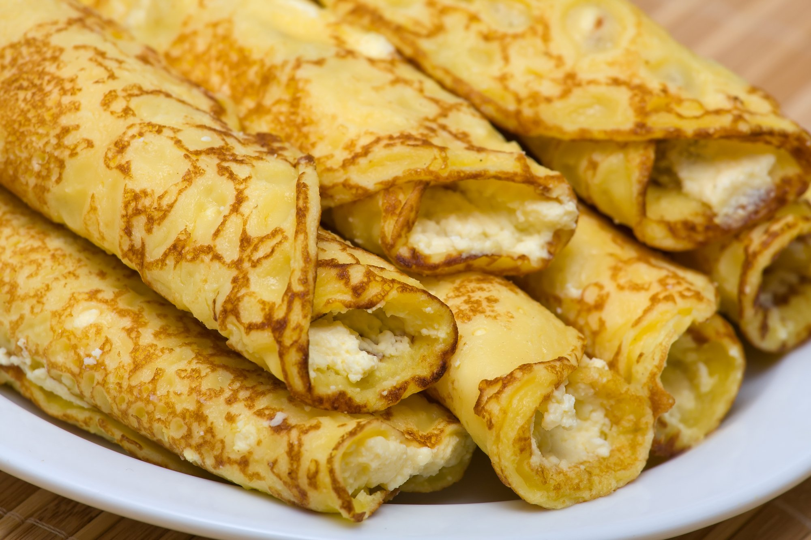
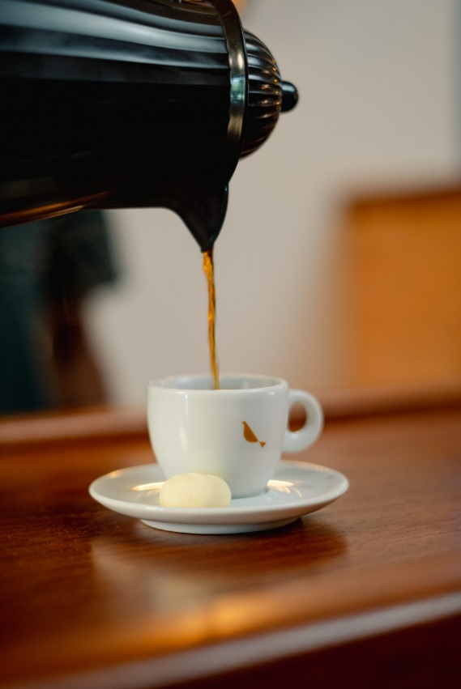

Panquecas hungaras
de queijinho e canela
Feitas para Maísa pela sua oma

Um cheirinho de casa, um abraço em forma de massa fina e dourada.
O queijinho derrete, a canela perfuma — e cada mordida lembra que o amor também se serve quente.
Ingredientes:
Para a massa:
- 259g de leite fresco
- Pitada de sal
- pitada de bicarbonato (150g)
- 2 ovos
- 2 xícaras de trigo
- 1 colher (sopa) óleo
- 1 colher (chá) de açúcar
- Opcionais: 1 colher (chá) de extrato de baunilha
Modo de preparo:
- Primeiro misture as gemas, leite, sal e bicarbonato
- Depois juntar a farinha de trigo peneiradada, at;e formar a consistencia de um mingau.
- Então bata as claras e junte com a massa
- Após tudo mistudrado dispeje uma pequena quantidade na frigideira e deixe até dourar, logo viewport
e deixe o outro lado chegar ao mesmo ponto
Dica para servir:
Combinaçao perfeita com um cafezinho quente!

Voltar ao topo